Camera obscura
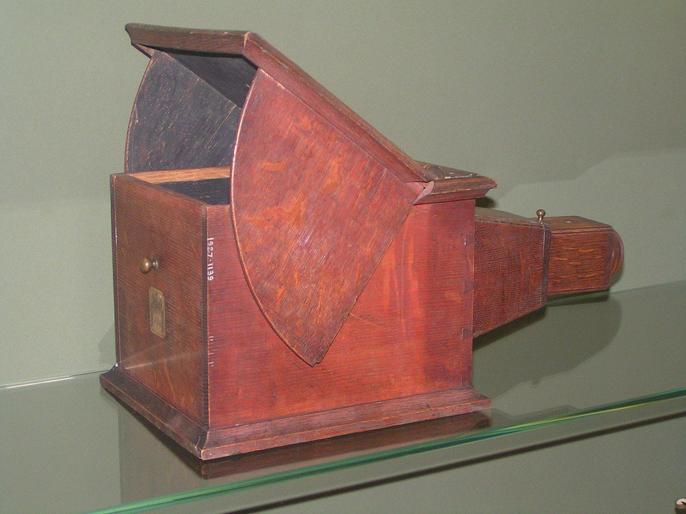
A camera obscura (pl. camerae obscurae or camera obscuras; from Latin camera obscūra 'dark chamber') is a darkened room with a small hole or lens at one side through which an image is projected onto a wall or table opposite the hole. The image (or the principle of its projection) of lensless camera obscuras is also referred to as "pinhole image".Camera obscura can also refer to analogous constructions such as a box or tent in which an exterior image is projected inside. Camera obscuras with a lens in the opening have been used since the second half of the 16th century and became popular as aids for drawing and painting. The concept was developed further into the photographic camera in the first half of the 19th century, when camera obscura boxes were used to expose light-sensitive materials to the projected image.
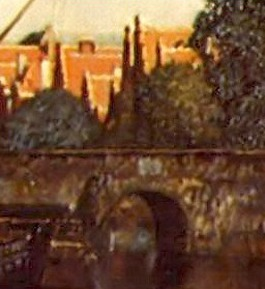
The camera obscura was used to study eclipses without the risk of damaging the eyes by looking directly into the Sun. As a drawing aid, it allowed tracing the projected image to produce a highly accurate representation, and was especially appreciated as an easy way to achieve proper graphical perspective.
Before the term camera obscura was first used in 1604, other terms were used to refer to the devices: cubiculum obscurum, cubiculum tenebricosum, conclave obscurum, and locus obscurus.
A camera obscura without a lens but with a very small hole is sometimes referred to as a pinhole camera, although this more often refers to simple (homemade) lensless cameras where photographic film or photographic paper is used.
Heliography
Heliography is the photographic process invented, and named thus, by Joseph Nicéphore Niépce around 1822, which he used to make the earliest known surviving photograph from nature, View from the Window at Le Gras (1826 or 1827), and the first realisation of photoresist as means to reproduce artworks through inventions of photolithography and photogravure.
Nicéphore Niépce began experiments with the aim of achieving a photo-etched printmaking technique in 1811.
He knew that the acid-resistant Bitumen of Judea used in etching hardened with exposure to light. In experiments he coated it on plates of glass, zinc, copper and silver-surfaced copper, pewter and limestone (lithography), and found the surface exposed to the most light resisted dissolution in oil of lavender and petroleum, so that the uncoated shadow areas might be traditionally treated through acid etching and aquatint to print black ink.
By 1822 had made the first light-resistant heliographic copy of an engraving, made without a lens by placing the print in contact with the light-sensitive plate. In 1826 he increasingly used pewter plates because their reflective surface made the image more clearly visible.
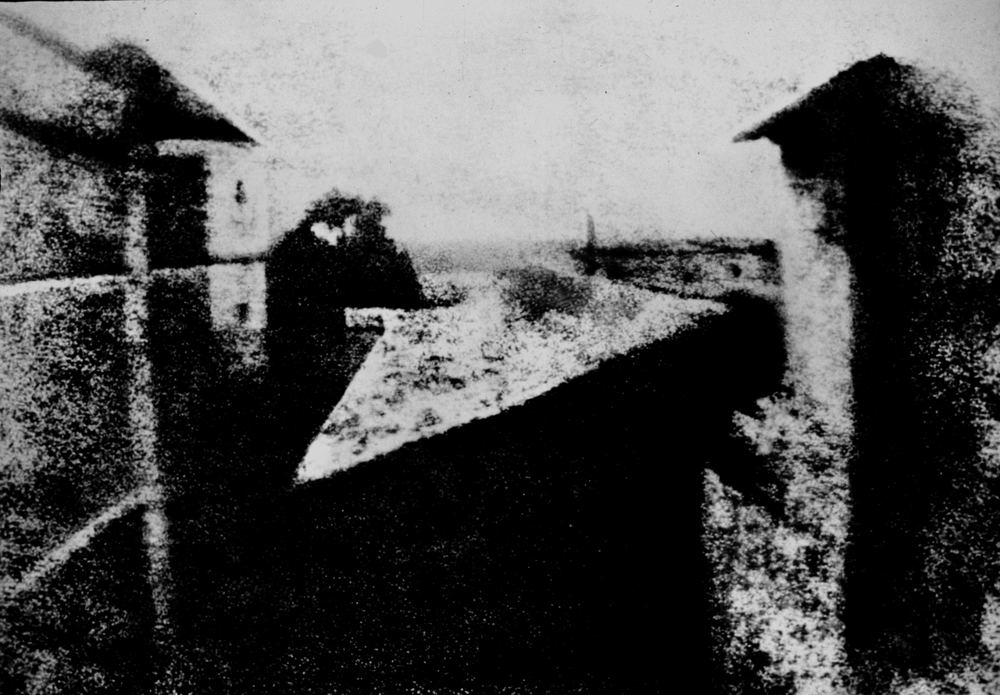
Niépce prepared a synopsis of his experiments in November 1829: On Heliography, or a method of automatically fixing by the action of light the image formed in the camera obscura which outlines his intention to use his “Heliographic” method of photogravure or photolithography as a means of making lithographic, intaglio or relief master plates for multiple printed reproductions in ink.
Although heliography did not achieve his intentions during Niépce's lifetime, it was further developed by his nephew Claude Félix Abel Niépce de Saint-Victor; in 1855, with the help of the copper engraver Lemaître, he succeeded in etching the heliographs and producing prints from them, laying the foundation for later photoengraving processes.
Daguerreotype
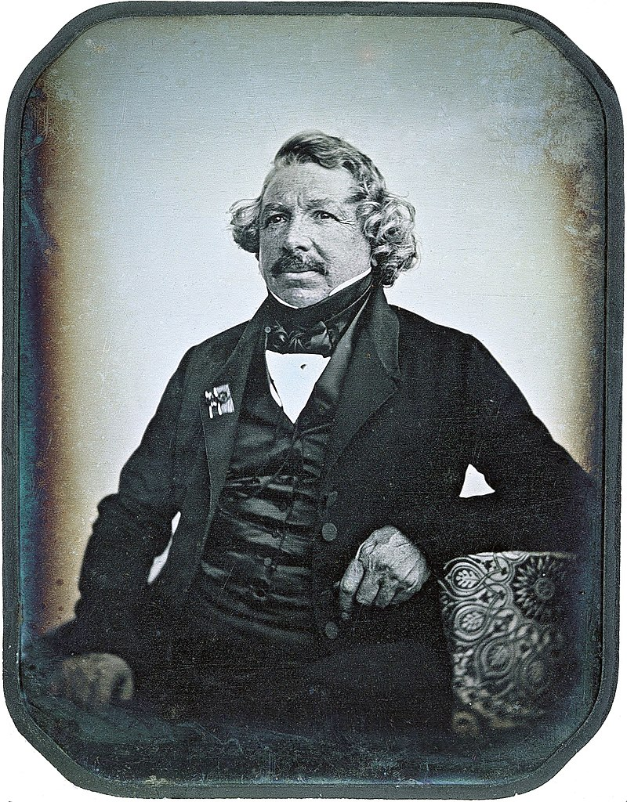
Daguerreotype was the first publicly available photographic process; it was widely used during the 1840s and 1850s. "Daguerreotype" also refers to an image created through this process.
Invented by Louis Daguerre and introduced worldwide in 1839, the daguerreotype was almost completely superseded by 1856 with new, less expensive processes, such as ambrotype (collodion process), that yield more readily viewable images. There has been a revival of the daguerreotype since the late 20th century by a small number of photographers interested in making artistic use of early photographic processes.
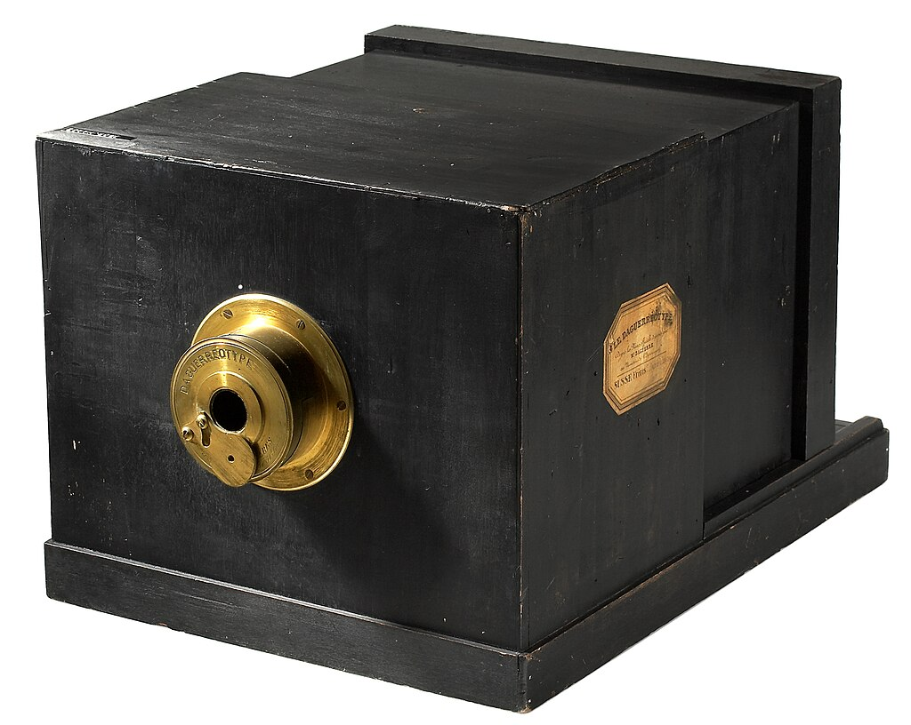
To make the image, a daguerreotypist polished a sheet of silver-plated copper to a mirror finish; treated it with fumes that made its surface light-sensitive; exposed it in a camera for as long as was judged to be necessary, which could be as little as a few seconds for brightly sunlit subjects or much longer with less intense lighting; made the resulting latent image on it visible by fuming it with mercury vapor; removed its sensitivity to light by liquid chemical treatment; rinsed and dried it; and then sealed the easily marred result behind glass in a protective enclosure.
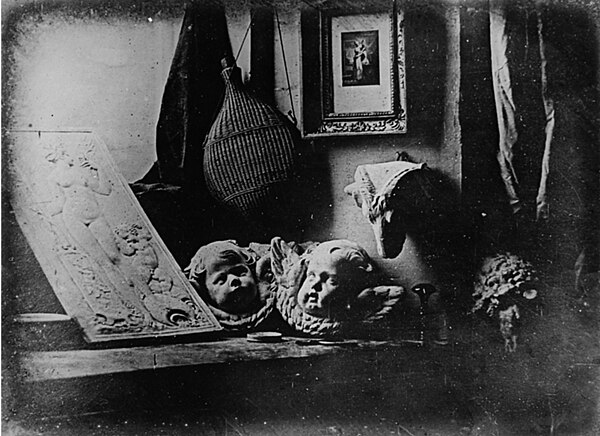
The image is on a mirror-like silver surface and will appear either positive or negative, depending on the angle at which it is viewed, how it is lit and whether a light or dark background is being reflected in the metal. The darkest areas of the image are simply bare silver; lighter areas have a microscopically fine light-scattering texture. The surface is very delicate, and even the lightest wiping can permanently scuff it. Some tarnish around the edges is normal.
Several types of antique photographs, most often ambrotypes and tintypes, but sometimes even old prints on paper, are commonly misidentified as daguerreotypes, especially if they are in the small, ornamented cases in which daguerreotypes made in the US and the UK were usually housed. The name "daguerreotype" correctly refers only to one very specific image type and medium, the product of a process that was in wide use only from the early 1840s to the late 1850s.
Calotype
Calotype or talbotype is an early photographic process introduced in 1841 by William Henry Fox Talbot, using paper coated with silver iodide. Paper texture effects in calotype photography limit the ability of this early process to record low contrast details and textures.
The term calotype comes from the Ancient Greek kalos, "beautiful", and typos, "impression".
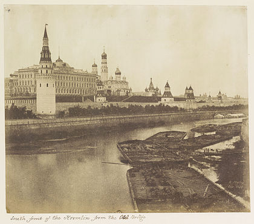
Despite their flexibility and the ease with which they could be made, calotypes did not displace the daguerreotype. In part, this was the result of Talbot having patented his processes in England and beyond. Unlike Talbot, Daguerre who had been granted a stipend by the French state in exchange for making his process publicly available, did not patent his invention. In Scotland, where the English patent law was not applicable at the time, members of the Edinburgh Calotype Club and other Scottish early photographers successfully adopted the paper-negative photo technology. In England, the Calotype Society was organized in London around 1847 attracting a dozen enthusiasts. In 1853, twelve years after the introduction of paper-negative photography to the public, Talbot's patent restriction was lifted.
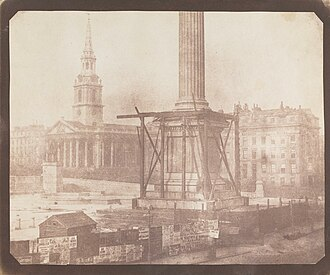
In addition, the calotype produced a less clear image than the daguerreotype. The use of paper as a negative meant that the texture and fibers of the paper were visible in prints made from it, leading to an image that was slightly grainy or fuzzy compared to daguerreotypes, which were usually sharp and clear. Nevertheless, calotypes - and the salted paper prints that were made from them - remained popular in the United Kingdom and on the European continent outside France in the 1850s, especially among the amateur calotypists, who prized the aesthetics of calotypes and also wanted to differentiate from commercial photographers, until the collodion process enabled both to make glass negatives combining the sharpness of a daguerreotype with the replicability of a calotype later in the nineteenth century. British photographers also brought the calotype to India, where, for example, in 1848, John McCosh, a surgeon in the East India Company, took the first image of the Maharajah Duleep Singh.
Collodion process
The collodion process is an early photographic process. The collodion process, mostly synonymous with the "collodion wet plate process", requires the photographic material to be coated, sensitized, exposed, and developed within the span of about fifteen minutes, necessitating a portable darkroom for use in the field. Collodion is normally used in its wet form, but it can also be used in its dry form, at the cost of greatly increased exposure time. The increased exposure time made the dry form unsuitable for the usual portraiture work of most professional photographers of the 19th century. The use of the dry form was mostly confined to landscape photography and other special applications where minutes-long exposure times were tolerable.
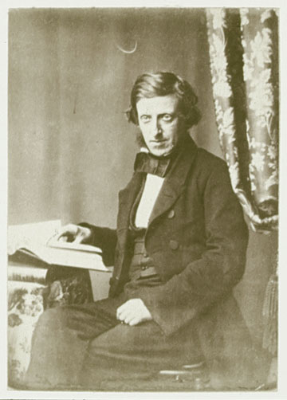
Despite its disadvantages, wet plate collodion became enormously popular. It was used for portraiture, landscape work, architectural photography, and art photography. The largest collodion glass plate negatives produced in the nineteenth century were made in Sydney, Australia, in 1875. They were made by the professional photographer Charles Bayliss with the help of a wealthy amateur photographer Bernhard Otto Holtermann, who also funded the project.
Bayliss and Holtermann produced four known glass negatives all of which were taken from Holtermann's purpose-built camera in the tower of his mansion in North Sydney. Two were 160 x 96.5 cm (5.1 ft x 3.08 ft) and formed a panorama of Sydney Harbour from Garden Island to Miller's Point. The other two were 136 x 95 cm (4.4 x 3.1 feet) and were of the Harbour and Garden Island and Longnose Point. Three of the four are now held by the State Library of New South Wales.
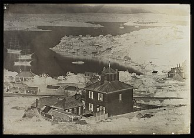
The wet plate process is used by a number of artists and experimenters who prefer its aesthetic qualities to those of the more modern gelatin silver process. World Wet Plate Day is staged annually in May for contemporary practitioners. Oskar Barnack Award winning photojournalist and contemporary collodion wet plate artist Charles Mason finds an artistic appeal in the uncertainty of the results of a wet plate photograph that cannot be recreated with modern digital photography. Mason says "If you plan it, then it becomes contrived, If you just let it happen, it's the gods helping you out." In 2018 Mason completed an artist-in-residency program with Denali National Park where he produced 24 collodion wet plate images of the park.
Gelatin silver process
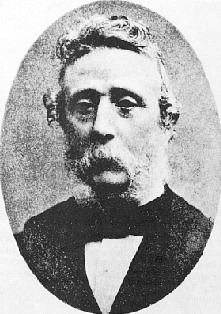
The gelatin silver process is the most commonly used chemical process in black-and-white photography, and is the fundamental chemical process for modern analog color photography. As such, films and printing papers available for analog photography rarely rely on any other chemical process to record an image. A suspension of silver salts in gelatin is coated onto a support such as glass, flexible plastic or film, baryta paper, or resin-coated paper. These light-sensitive materials are stable under normal keeping conditions and are able to be exposed and processed even many years after their manufacture. The "dry plate" gelatin process was an improvement on the collodion wet-plate process dominant from the 1850s - 1880s, which had to be exposed and developed immediately after coating.
Gelatine was used to copy the images of Daguerreotypes by 1845 and Alphonse Louis Poitevin wrote about positive proofs of negatives on dry gelatine plates in 1850.
In the 1860s, the dry plate collodion process (with gelatin or albumen) was described as advantageous for outdoor photography, especially when a large amount of shots in different places were required, or when there was little time. Negatives taken during summer outings could wait until the long winter evenings to be developed, fixed and printed. Exposure times were long compared to the wet process, but that required much more time to prepare a plate before exposure, to develop, fix and wash the negative soon after, with chemicals and a portable dark room that had to be dragged around and installed.
The introduction of the gelatin silver process is commonly attributed to Richard Leach Maddox, author of the 1871 article An Experiment with Gelatino-Bromide.
In 1873, Charles Harper Bennett discovered a method of hardening the emulsion, making it more resistant to friction. In 1878, Bennett discovered that by prolonged heating, the sensitivity of the emulsion could be greatly increased. While dry plate processes could previous only be used with long exposures, Bennett's plates attributed much to instantaneous photography turning into a very common practice.
George Eastman developed a machine to coat glass plates in 1879 and founded the Eastman Film and Dry Plate Company in 1881.
William de Wiveleslie Abney and Josef Maria Eder improved the formula with silver chloride.
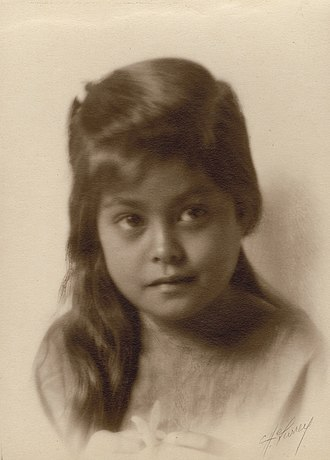
Gelatin silver print paper was made as early as 1874 on a commercial basis, but it was poor quality because the dry-plate emulsion was coated onto the paper only as an afterthought. Coating machines for the production of continuous rolls of sensitized paper were in use by the mid-1880s, though widespread adoption of gelatin silver print materials did not occur until the 1890s. The earliest papers had no baryta layer, and it was not until the 1890s that baryta coating became a commercial operation, first in Germany, in 1894, and then taken up by Kodak by 1900.
Although the baryta layer plays an important part in the manufacture of smooth and glossy prints, the baryta paper of the 1890s did not produce the lustrous or glossy print surface that became the standard for fine art photography in the twentieth century. Matting agents, textured papers, and thin baryta layers that were not heavily calendering produced a low-gloss and textured appearance. The higher gloss papers first became popular in the 1920s and 30s as photography transitioned from pictorialism into modernism, photojournalism, and "straight" photography.
Research over the last 125 years has led to current materials that exhibit low grain and high sensitivity to light.
Lippmann plate
Gabriel Lippmann conceived a two-step method to record and reproduce colours, variously known as direct photochromes, interference photochromes, Lippmann photochromes, Photography in natural colours by direct exposure in the camera or the Lippmann process of colour photography. Lippmann won the Nobel Prize in Physics for this work in 1908.
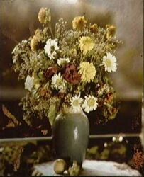
A Lippmann plate is a clear glass plate (having no anti-halation backing), coated with an almost transparent (very low silver halide content) emulsion of extremely fine grains, typically 0.01 to 0.04 micrometres in diameter. Consequently, Lippmann plates have an extremely high resolving power exceeding 400 lines/mm.
In Lippmann's method, a glass plate is coated with an ultra fine grain light-sensitive film using the Albumen Process containing potassium bromide, then dried, sensitized in the silver bath, washed, irrigated with cyanine solution, and dried again. The back of the film is then brought into optical contact with a reflective surface. This is done by mounting the plate in a specialized holder with pure mercury behind the film. When it is exposed in the camera through the glass side of the plate, the light rays which strike the transparent light-sensitive film are reflected back on themselves and, by interference, create standing waves. The standing waves cause exposure of the emulsion in diffraction patterns. The developed and fixated diffraction patterns constitute a Bragg condition in which diffuse, white light is scattered in a specular fashion and undergoes constructive interference in accordance to Bragg's law. The result is an image having very similar colours as the original using a black and white photographic process.
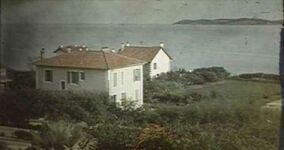
For this method Lippmann won the Nobel Prize in Physics in 1908.
The colour image can only be viewed in the reflection of a diffuse light source from the plate, making the field of view limited, and it cannot be copied. The technique was very insensitive with the emulsions of the time and it never came into general use. Another reason Lippmann's process of colour photography did not succeed can be found in the invention of the autochrome plates by the Lumière brothers. Lippmann photographic techniques have been proposed as a method of producing images which can easily be viewed, but not copied, for security purposes.
Autochrome Lumière
The Autochrome Lumière was an early color photography process patented in 1903 by the Lumière brothers in France and first marketed in 1907. Autochrome was an additive color "mosaic screen plate" process. It was the principal color photography process in use before the advent of subtractive color film in the mid - 1930s.
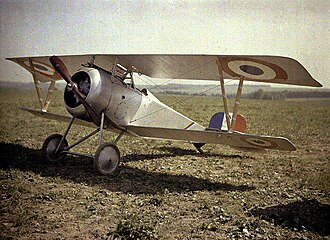
Prior to the Lumière brothers, Louis Ducos du Hauron utilized the separation technique to create colour images on paper with screen plates, producing natural colours through superimposition, which would become the foundation of all commercial colour photography. Descendants of photographer Antoine Lumière, inventors Louis and Auguste Lumière utilized Du Hauron's (1869) technique, which had already been improved upon by other inventors such as John Joly (1894) and James William McDonough (1896), making it possible to print photographic images in colour. One of the most broadly used forms of colour photography in the early twentieth century, autochrome was recognized for its aesthetic appeal.
Autochrome is an additive color "mosaic screen plate" process. The medium consists of a glass plate coated on one side with a random mosaic of microscopic grains of potato starch dyed red-orange, green, and blue-violet (a variant of the standard red, green, and blue additive colors); the grains of starch act as color filters. Lampblack fills the spaces between grains, and a black-and-white panchromatic silver halide emulsion is coated on top of the filter layer.
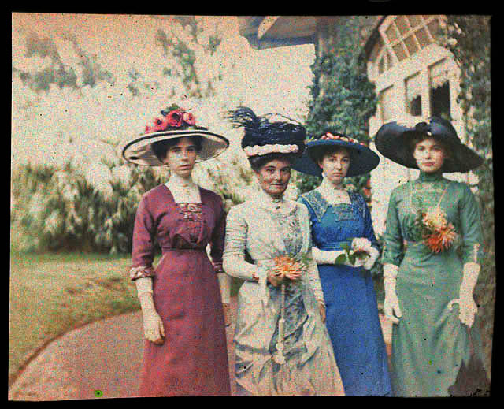
Unlike ordinary black-and-white plates, the Autochrome was loaded into the camera with the bare glass side facing the lens so that the light passed through the mosaic filter layer before reaching the emulsion. The use of an additional special orange-yellow filter in the camera was required to block ultraviolet light and restrain the effects of violet and blue light, parts of the spectrum to which the emulsion was overly sensitive. Because of the light loss due to all the filtering, Autochrome plates required much longer exposures than black-and-white plates and films, which meant that a tripod or other stand had to be used and that it was not practical to photograph moving subjects. The plate was reversal-processed into a positive transparency — that is, the plate was first developed into a negative image but not "fixed", then the silver forming the negative image was chemically removed, then the remaining silver halide was exposed to light and developed, producing a positive image.
The luminance filter (silver halide layer) and the mosaic chrominance filter (the colored potato starch grain layer) remained precisely aligned and were distributed together, so that light was filtered in situ. Each starch grain remained in alignment with the corresponding microscopic area of silver halide emulsion coated over it. When the finished image was viewed by transmitted light, each bit of the silver image acted as a micro-filter, allowing more or less light to pass through the corresponding colored starch grain, recreating the original proportions of the three colors. At normal viewing distances, the light coming through the individual grains blended together in the eye, reconstructing the color of the light photographed through the filter grains.
Phototype
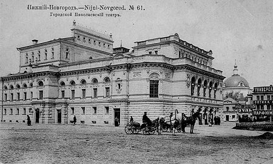
Phototype is a photomechanical process designed to produce typographic clichés and replicate high-quality halftone images using flat-panel printing. Of all the methods of printing photographic reproduction, phototype is considered the highest quality, second only to heliogravure.
The term "phototype" is used to refer both to the process itself and to the prints produced by it. The same name was given to small printing houses that specialized in reproducing images using this technology.
Attempts to replace photographic printing on light-sensitive photographic paper with printing methods for replicating photographs were made immediately after the invention of calotype. The reason was the high cost of silver halide photographic prints and their fragility, unacceptable for book printing. Patented in 1855 by the French chemist Alphonse Poitevin, the phototype was one of the first low-cost alternatives to the positive photographic process.
However, it became widespread only after it was improved in 1868 by the court photographer of King Ludwig II of Bavaria, Joseph Albert. In its original form, the process did not provide sufficiently strong adhesion of the photosensitive layer to the substrate, which served as a lithographic stone. Instead, Albert suggested using glass with an intermediate bonding layer that would allow the gelatin to be securely held. In its modified form, the process was called “Albertypy” or “collotype”, but in professional printing the technology continued to be called phototype. It quickly replaced the less technologically advanced woodbury type from the market and was used for printing halftone photographs until the invention of offset printing at the beginning of the 20th century.

At the time of its invention, phototype was the only photomechanical technology that made it possible to reproduce photographs with high quality at a significantly lower cost compared to albumen and gelatin-silver photographic printing from the original negative. The process turned out to be so successful that for some time it was even used by artists as one of the graphic techniques. For example, the German abstract artist Willi Baumeier used phototype to create some of his drawings. Due to the absence of a regular raster, phototype until the advent of digital printing remained an almost unsurpassed photo reproduction technology in terms of quality. Some large printing houses used it to reproduce high-quality illustrations until the end of the 20th century.
Instant film
Instant film is a type of photographic film that was introduced by Polaroid Corporation to produce a visible image within minutes or seconds of the photograph's exposure. The film contains the chemicals needed for developing and fixing the photograph, and the camera exposes and initiates the developing process after a photo has been taken.
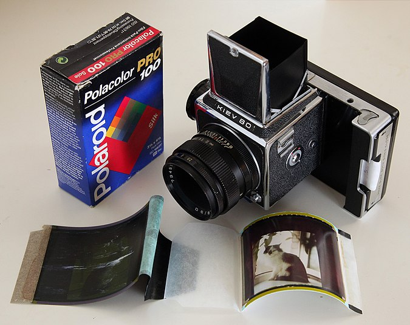
In earlier Polaroid instant cameras the film is pulled through rollers, breaking open a pod containing a reagent that is spread between the exposed negative and receiving positive sheet. This film sandwich develops for some time after which the positive sheet is peeled away from the negative to reveal the developed photo. In 1972, Polaroid introduced integral film, which incorporated timing and receiving layers to automatically develop and fix the photo without any intervention from the photographer.
Instant film has been available in sizes from 24 mm × 36 mm (0.94 in × 1.42 in) (similar to 135 film) up to 50.8 cm × 61 cm (20 in × 24 in) size, with the most popular film sizes for consumer snapshots being approximately 83 mm × 108 mm (3.3 in × 4.3 in) (the image itself is smaller as it is surrounded by a border). Early instant film was distributed on rolls, but later and current films are supplied in packs of 8 or 10 sheets, and single sheet films for use in large format cameras with a compatible back.
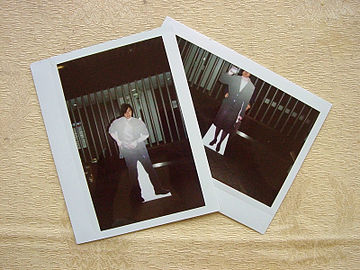
Though the quality of integral instant film is not as high as conventional film, peel apart black and white film (and to a lesser extent color film) approached the quality of traditional film types. Instant film was used where it was undesirable to have to wait for a roll of conventional film to be finished and processed, e.g., documenting evidence in law enforcement, in health care and scientific applications, and producing photographs for passports and other identity documents, or simply for snapshots to be seen immediately. Some photographers use instant film for test shots, to see how a subject or setup looks before using conventional film for the final exposure. Instant film is also used by artists to achieve effects that are impossible to accomplish with traditional photography, by manipulating the emulsion during the developing process, or separating the image emulsion from the film base. Instant film has been supplanted for most purposes by digital photography, which allows the result to be viewed immediately on a display screen or printed with dye sublimation, inkjet, or laser home or professional printers.
Instant film is notable for having had a wider range of film speeds available than other negative films of the same era, having been produced in ISO 4 to ISO 20,000 (Polaroid 612). Current instant film formats typically have an ISO between 100 and 1000.
Two companies currently manufacture instant film: Polaroid (previously The Impossible Project) for older Polaroid cameras (600, SX-70, and 8×10) and its I-Type cameras, and Supersense that manufacture pack film for Polaroid cameras under the One Instant brand.
Digital photography
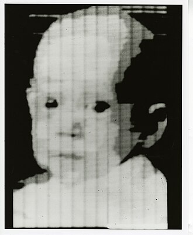
Digital photography uses cameras containing arrays of electronic photodetectors interfaced to an analog-to-digital converter (ADC) to produce images focused by a lens, as opposed to an exposure on photographic film. The digitized image is stored as a computer file ready for further digital processing, viewing, electronic publishing, or digital printing. It is a form of digital imaging based on gathering visible light (or for scientific instruments, light in various ranges of the electromagnetic spectrum).
Until the advent of such technology, photographs were made by exposing light-sensitive photographic film and paper, which was processed in liquid chemical solutions to develop and stabilize the image. Digital photographs are typically created solely by computer-based photoelectric and mechanical techniques, without wet bath chemical processing.
In consumer markets, apart from enthusiast digital single-lens reflex cameras (DSLR), most digital cameras now come with an electronic viewfinder, which approximates the final photograph in real-time. This enables the user to review, adjust, or delete a captured photograph within seconds, making this a form of instant photography, in contrast to most photochemical cameras from the preceding era.
Moreover, the onboard computational resources can usually perform aperture adjustment and focus adjustment (via inbuilt servomotors) as well as set the exposure level automatically, so these technical burdens are removed from the photographer unless the photographer feels competent to intercede (and the camera offers traditional controls). Electronic by nature, most digital cameras are instant, mechanized, and automatic in some or all functions. Digital cameras may choose to emulate traditional manual controls (rings, dials, sprung levers, and buttons) or it may instead provide a touchscreen interface for all functions; most camera phones fall into the latter category.
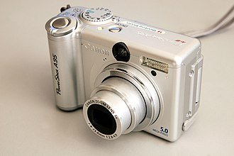
Digital photography spans a wide range of applications with a long history. Much of the technology originated in the space industry, where it pertains to highly customized, embedded systems combined with sophisticated remote telemetry. Any electronic image sensor can be digitized; this was achieved in 1951. The modern era in digital photography is dominated by the semiconductor industry, which evolved later. An early semiconductor milestone was the advent of the charge-coupled device (CCD) image sensor, first demonstrated in April 1970; since then, the field has advanced rapidly, with concurrent advances in photolithographic fabrication.
The first consumer digital cameras were marketed in the late 1990s. Professionals gravitated to digital slowly, converting as their professional work required using digital files to fulfill demands for faster turnaround than conventional methods could allow. Starting around 2000, digital cameras were incorporated into cell phones; in the following years, cell phone cameras became widespread, particularly due to their connectivity to social media and email. Since 2010, the digital point-and-shoot and DSLR cameras have also seen competition from the mirrorless digital cameras, which typically provide better image quality than point-and-shoot or cell phone cameras but are smaller in size and shape than typical DSLRs. Many mirrorless cameras accept interchangeable lenses and have advanced features through an electronic viewfinder, which replaces the through-the-lens viewfinder of single-lens reflex cameras.